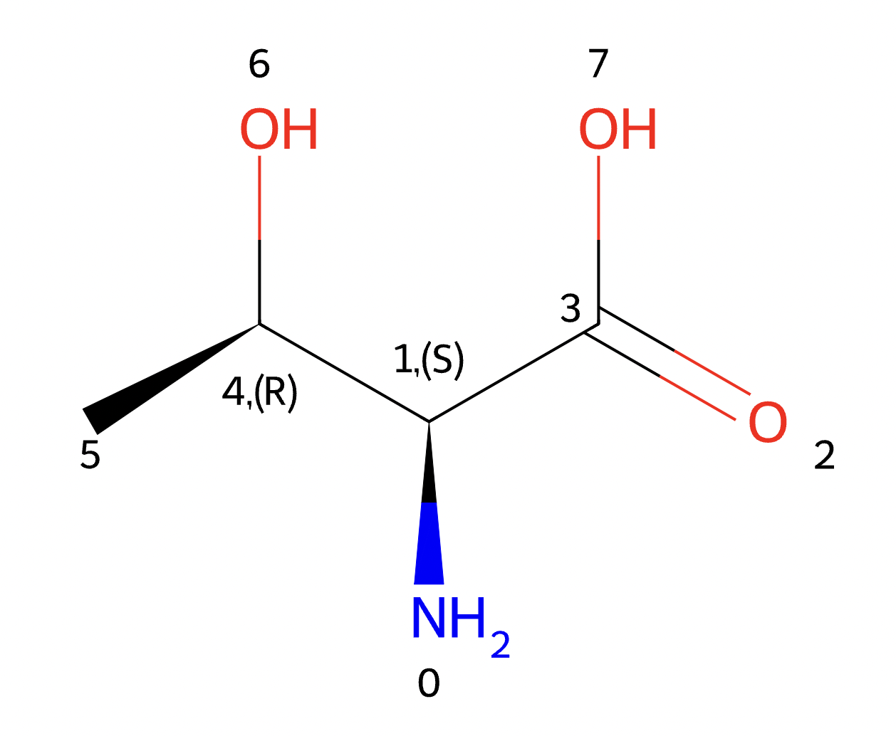
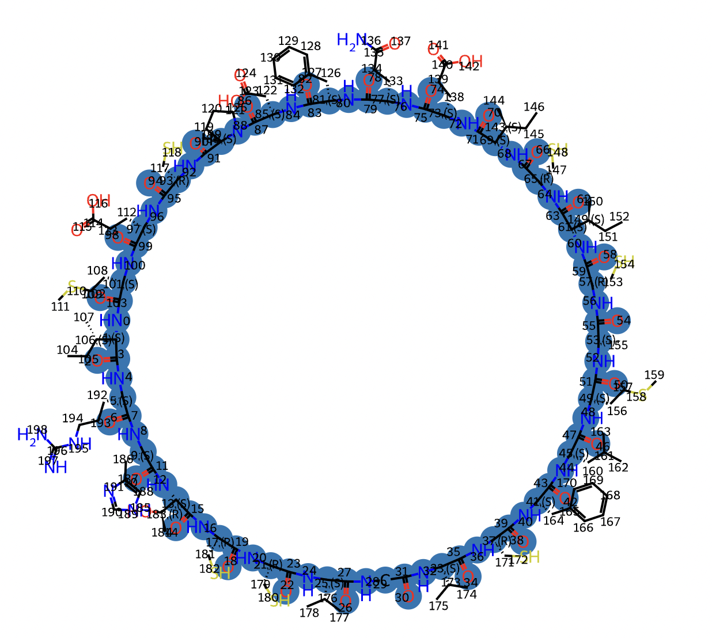
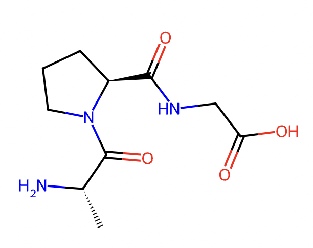
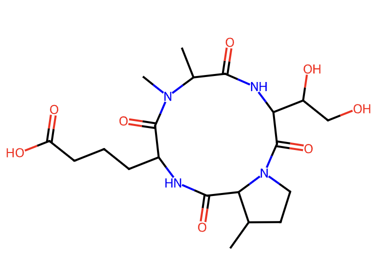

cyclicpeptide package
cyclicpeptide.IOManager
- cyclicpeptide.IOManager.graph2svg(G, output_file='outpot.svg', dpi=60)
Convert a graph object to an SVG file and optionally save it.
- Parameters:
G (nx.Graph) – The graph object to be converted, typically a networkx graph (e.g., nx.Graph).
output_file (str) – (Optional) The name of the file to which the SVG will be saved. Defaults to ‘outpot.svg’.
dpi (int) – (Optional) The dots per inch (resolution) of the graph layout. Defaults to 60.
- Returns:
svg file
- cyclicpeptide.IOManager.plot_graph(G, output_file='output.pdf', dpi=60)
Plot a graph object and optionally save the plot as a PDF file.
- Parameters:
G (nx.Graph) – The graph object to be plotted, typically a networkx graph (e.g., nx.Graph).
output_file (str) – (Optional) The name of the file to which the plot will be saved. Defaults to ‘output.pdf’.
dpi (int) – (Optional) The dots per inch (resolution) for the saved plot. Defaults to 60.
- Returns:
pdf file
- cyclicpeptide.IOManager.plot_smiles(smiles, output_file='output.svg', w=600, h=600, isdisplay=False)
Plot a molecule represented by its SMILES (Simplified Molecular Input Line Entry System) string and optionally save or display the resulting SVG image.
- Parameters:
smiles (str) – The SMILES string representing the molecule to be plotted.
output_file (str) – (Optional) The name of the file to which the SVG image of the molecule will be saved. Defaults to ‘output.svg’.
w (int) – (Optional) The width of the SVG image in pixels. Defaults to 600.
h (int) – (Optional) The height of the SVG image in pixels. Defaults to 600.
isdisplay (bool) – (Optional) A boolean flag indicating whether to display the SVG image. If True, the image will be displayed; if False, only the SVG string will be returned. Defaults to False.
- Returns:
If isdisplay is False, the SVG string representing the plotted molecule is returned. If isdisplay is True, nothing is returned as the image is directly displayed.
- Return type:
str or None
This function first attempts to convert the given SMILES string into a molecule object using Chem.MolFromSmiles.
- cyclicpeptide.IOManager.save_mol(molblock, output_file)
Save a molecule represented by a MolBlock string to a file.
- Parameters:
molblock (str) – The MolBlock string representation of the molecule to be saved.
output_file (str) – The name of the file to which the molecule will be saved.
- Returns:
molblock file
This function takes a MolBlock string (molblock) and saves the corresponding molecule to a file with the specified output_file name.
- cyclicpeptide.IOManager.save_pdb(pdbblock, output_file)
Save a molecule represented by a PDBBlock string to a file.
- Parameters:
pdbblock (str) – The PDBBlock string representation of the molecule to be saved.
output_file (str) – The name of the file to which the molecule will be saved.
- Returns:
pdbblock file
This function takes a PDBBlock string (pdbblock) and saves the corresponding molecule to a file with the specified output_file name.
- cyclicpeptide.IOManager.save_svg(svg, output_file)
Save an SVG (Scalable Vector Graphics) string to a file.
- Parameters:
svg (str) – The SVG string to be saved.
output_file (str) – The name of the file to which the SVG will be saved.
- Returns:
svg file
This function takes an SVG string and saves it to a file with the specified output_file name.
cyclicpeptide.Structure2Sequence
File Name: structure2sequence.py Author: Dingfeng Wu Creator: Dingfeng Wu Date Created: 2022-11-15 Last Modified: 2023-12-26 Version: 1.0.1 License: MIT License Description: Structure-to-Sequence (Struc2seq) is a computing process based on RDkit and the characteristics of cyclic peptide sequences, which can convert cyclic peptide SMILES into sequence information.
Copyright Information: Copyright (c) 2023 dfwlab (https://dfwlab.github.io/)
The code in this script can be used under the MIT License.
- cyclicpeptide.Structure2Sequence.aa_matching(query_aas, atom_mappings, connected_pairs, ref_essentials, ref_others)
- Parameters:
query_aas (List, obtained from
get_complete_aas()) – The list of amino acids contained in the target cyclic peptide..atom_mappings (obtained from
get_complete_aas()) – Cyclic peptide atom mapping.connected_pairs (List, obtained from
get_connected_pairs()) – Amino acids in cyclic peptides are linked in pairs.ref_essentials (List, obtained from
reference_aa_monomer()) – The essential amino acid contained in target cyclic peptide.ref_others (List, obtained from
reference_aa_monomer()) – The nonessential amino acid contained in the target cyclic peptide.
- Returns:
A treated cyclic peptide chain
- cyclicpeptide.Structure2Sequence.aa_side_chain_extend(m, aa_set)
Expand the side chains of amino acids within a molecule to include neighboring atoms.
- Parameters:
m (Chem.Mol) – The molecule object containing the amino acids whose side chains are to be extended.
aa_set (list[set[int]]) – A list of sets, where each set likely represents the atom indices of an amino acid.
- Returns:
A list of lists, where each list contains the expanded set of atom indices for an amino acid after including its side chain neighbors.
- Return type:
list[list[int]]
This function aims to extend the side chains of amino acids in the given molecule (m).
- cyclicpeptide.Structure2Sequence.aa_xyz(conformer, aa_idx)
Calculate the mean x and y coordinates of a set of atoms within a conformer corresponding to a specific amino acid index.
- Parameters:
conformer (object (presumably a relevant conformer type in the context, e.g., related to molecular conformations)) – The conformer object from which the atom positions will be retrieved.
aa_idx (int) – The index of the amino acid for which the atom coordinates are to be calculated.
- Returns:
A tuple containing the mean x and y coordinates of the atoms within the conformer that belong to the specified amino acid.
- Return type:
tuple[float, float]
- cyclicpeptide.Structure2Sequence.blend_colors(c1, c2, alpha)
Blend two colors based on a given alpha value.
- Parameters:
c1 (tuple[int, int, int]) – The first color represented as a tuple of three values (red, green, blue).
c2 (tuple[int, int, int]) – The second color represented as a tuple of three values (red, green, blue).
alpha (float) – The blending factor, a value between 0 and 1 that determines the proportion of each color in the blend.
- Returns:
A tuple representing the blended color with values for red, green, and blue.
- Return type:
tuple[int, int, int]
This function takes two colors (c1 and c2) represented as tuples of red, green, and blue values, along with a blending factor (alpha). It then calculates the blended color by applying a weighted average formula for each color channel (red, green, and blue). The resulting blended color is returned as a tuple of the new red, green, and blue values.
- cyclicpeptide.Structure2Sequence.detect_backbone(mol)
Detect the backbone of a given molecule.
- Parameters:
mol (Chem.Mol) – The molecule object for which the backbone is to be detected.
- Returns:
A tuple containing two elements: - The first element is the backbone of the molecule represented as a tuple of atom indices if matches are found; otherwise, an empty string. - The second element is a list of the backbone atom indices in reverse order if matches are found; otherwise, None.
- Return type:
tuple[str, list[int] or None]
This function aims to identify the backbone of a molecule.
- cyclicpeptide.Structure2Sequence.get_complete_aas(m, aa_units)
Obtain complete amino acid structures
"m"is generated from SMILE in mol or read in MOL file"aa_units"is an amino acid residue separated bysplit_aa_unit()function.
Example:
aas, atom_mappings = struc2seq.get_complete_aas(m, aa_units) aa3 = struc2seq.highlight_atom(aas[3], [[]]) IO_set.save_as_Image(aa3, 'aa3.png', 300, 300)
{kind=link}
- cyclicpeptide.Structure2Sequence.get_connected_chain(connected_pairs, N_aa)
Retrieve the connected chain from a set of connected pairs within a given number of amino acids.
- Parameters:
connected_pairs (list[tuple[int, int, str]]) – A list of tuples where each tuple contains three elements: two indices (i and j) and a connection type (t). These pairs represent the connections between different elements (presumably amino acids).
N_aa (int) – The total number of amino acids in the context.
- Returns:
A list representing the connected chain of indices that covers as many of the amino acids as possible, based on the given connected pairs.
- Return type:
list[int]
This function aims to find the connected chain within the given connected_pairs for a specific number of amino acids (N_aa).
- cyclicpeptide.Structure2Sequence.get_connected_pairs(m, atom_mappings)
Verify that the main chain is connected end to end
- Parameters:
m – target molecule MOL file.
atom_mappings (obtained from
get_complete_aas()) – Cyclic peptide atom mapping.
- Returns:
Amino acid-linked pair
- Return type:
List[Tuple[int, int, str]]
- cyclicpeptide.Structure2Sequence.highlight_atom(m, atoms, transparency=1, isdisplay=True)
Highlight amino acid residues in cyclic peptides with different colors.
basic.detect_backbone()andorder_backbone()function should be used before the use of cyclic peptide molecules for Identify peptide backbone and renumber atoms.
Example:
backbone_idx = basic.detect_backbone(m) m, backbone_idx = structure2sequence.order_backbone(m, backbone_idx) _ = structure2sequence.highlight_atom(m, [backbone_idx])
{kind=link}
- cyclicpeptide.Structure2Sequence.mol2seq_for_essentialAA(m)
Using the RDKit function “Chem.MolToSequence” conversion
Can convert peptide sequences with essential amino acids;
Sequences containing modified or non-essential amino acids cannot be accurately identified;
Suitable for linear peptides, unable to recognize the cyclization position of cyclic peptides;
Example:
smiles = 'CCC(C)[C@H](N)C1=NCC(C(=O)N[C@@H](CC(C)C)C(=O)N[C@H](CCC(=O)O)C(=O)N[C@H](C(=O)N[C@H]2CCCCNC(=O)[C@H](CC(N)=O)NC(=O)[C@@H](CC(=O)O)NC(=O)[C@H](Cc3cnc[nH]3)NC(=O)[C@@H](Cc3ccccc3)NC(=O)[C@H](C(C)CC)NC(=O)[C@@H](CCCN)NC2=O)C(C)CC)S1' m = Chem.MolFromSmiles(smiles) m_renum, seq = struc2seq.mol2seq_for_essentialAA(m) print('SEQ:', seq)
SEQ: IRHTCCVGVCFLMACICIEQFDPCEM
- cyclicpeptide.Structure2Sequence.order_backbone(m, backbone_idx)
Order the atoms of a molecule based on the provided backbone index and then detect the new backbone.
- Parameters:
m (Chem.Mol) – The molecule object whose atoms are to be reordered.
backbone_idx (list[int]) – The list of indices representing the backbone atoms of the molecule.
- Returns:
A tuple containing two elements: - The molecule object with its atoms reordered according to the process described. - The new list of indices representing the backbone atoms of the reordered molecule.
- Return type:
tuple[Chem.Mol, list[int]]
This function first creates a copy of the provided backbone index list (id_list). It then iterates through all the atoms in the molecule (m) to find the indices of atoms that are not in the original backbone index list. These non-backbone atom indices are added to the id_list.
Next, the function uses the Chem.RenumberAtoms method to reorder the atoms of the molecule according to the updated id_list. This results in a new molecule object (m_renum) with the atoms in a different order.
Finally, the function calls the detect_backbone function (presumably defined elsewhere) on the reordered molecule (m_renum) to detect the new backbone. The function then returns the reordered molecule and the new list of indices representing the backbone atoms of the reordered molecule.
- cyclicpeptide.Structure2Sequence.reference_aa_monomer(monomers_path)
Identify amino acids based on the monomer reference library
Identify the type of each amino acid unit;
If it can be directly recognized by 20 essential amino acids, then the amino acid can be directly determined;
If it cannot be directly recognized by essential amino acids, use library to find the maximum matching reference unit;
For cross amino acid units, select the two reference units with the most matching atoms and no cross;
If there are multiple best matched amino acid units, it may lead to different peptide chains;
Please note that some amino acids cannot be fully matched, users can view detailed information from the results;
- Parameters:
monomers_path (tsv) – The “monomers_path” to the monomer library file.
- Returns:
essential = {‘code’: [aa, symbol, num_atoms]}, others = {‘code’: [aa, symbol, num_atoms]},
- Return type:
dict[str, list[str]], dict[str, list[str]]
- cyclicpeptide.Structure2Sequence.reorder_result(order_chain, aas, aa_units, chains, connected_pairs)
Reorder various data structures related to amino acids and their connections based on a given order chain.
- Parameters:
order_chain (list[int]) – A list representing the new order of indices for the reordering operation.
aas (list) – A list of amino acid related data (the specific nature of which is not clear from this function alone but is likely to be some representation of amino acids).
aa_units (list) – A list of amino acid units (again, the exact nature is not fully defined here but is related to amino acids).
chains (list[list]) – A list of chains, where each chain is likely a list of indices or some other representation related to amino acids.
connected_pairs (list[tuple[int, int, str]]) – A list of tuples where each tuple contains three elements: two indices (i and j) and a connection type (t), representing the connections between different elements (presumably amino acids).
- Returns:
A tuple containing the reordered versions of the input data structures: - new_aas: The reordered list of amino acid related data. - new_aa_units: The reordered list of amino acid units. - new_chains: The reordered list of chains. - new_connected_pairs: The reordered list of connected pairs, sorted based on the minimum of the two indices in each tuple.
- Return type:
tuple[list, list, list[list], list[tuple[int, int, str]]]
This function takes in various data structures related to amino acids and their connections and reorders them according to the provided order chain.
- cyclicpeptide.Structure2Sequence.search_one_chain(query_idx, search_idxs, N, connected_pairs)
Search for a single chain within a set of connected pairs starting from a given query index.
- Parameters:
query_idx (int) – The starting index for the search.
search_idxs (list[int]) – A list of indices within which the search should be conducted.
N (int) – The maximum number of iterations or steps for the search.
connected_pairs (list[tuple[int, int, str]]) – A list of tuples where each tuple contains three elements: two indices (i and j) and a connection type (t). The connection type can be used to filter out certain connections during the search.
- Returns:
A list representing the chain of indices found during the search, starting from the query index and following the connections specified in the connected pairs, excluding connections of type ‘side chain’.
- Return type:
list[int]
This function conducts a search to find a chain of indices within the given search_idxs starting from the query_idx.
- cyclicpeptide.Structure2Sequence.sequence_map(m, aa_units, chain, connected_pairs, isdisplay=True)
- Parameters:
m – target molecule MOL file.
aa_units (separated by
split_aa_unit()function) – aa_units is an amino acid residue.chain (separated by
aa_matching()function) – cyclic peptide chain.connected_pairs (List, obtained from
get_connected_pairs()) – Amino acids in cyclic peptides are linked in pairs.isdisplay (True or False) – Optional “isdisplay”.
- cyclicpeptide.Structure2Sequence.sequence_str(chain, connected_pairs)
Generate a sequence string based on a given chain and connected pairs.
- Parameters:
chain (list[tuple]) – A list of tuples where each tuple likely represents an element in a sequence, and the first element of each tuple is used to build the sequence string.
connected_pairs (list[tuple[int, int, str]]) – A list of tuples where each tuple contains three elements: two indices (i and j) and a connection type (t). The connection type can be ‘side chain’ or other types, and the indices are used to determine if a special formatting is needed for the corresponding elements in the sequence.
- Returns:
A string representing the sequence where elements from the chain are joined with ‘–’ and certain elements are formatted with parentheses and a link index based on the connected pairs.
- Return type:
str
This function first extracts the first elements of each tuple in the chain list to create an initial sequence list (seq). Then, it iterates through the connected_pairs list. If the connection type (t) is ‘side chain’ or the absolute difference between the two indices (i and j) is not 1, it adds parentheses and a link index to the corresponding elements in the seq list. Finally, it joins all the elements in the seq list with ‘–’ to form the final sequence string.
- cyclicpeptide.Structure2Sequence.side_chain_neighbor(m, atoms, origin_aa_idx)
Find the neighboring atoms of side chains within a molecule that are not part of the original amino acid.
- Parameters:
m (Chem.Mol) – The molecule object in which to search for side chain neighbors.
atoms (list[int]) – A list of atom indices representing the atoms of the side chains.
origin_aa_idx (list[int]) – A list of atom indices representing the atoms of the original amino acid.
- Returns:
A list of atom indices representing the neighboring atoms of the side chains that are not part of the original amino acid.
- Return type:
list[int]
This function first initializes an empty set (neighbor_atoms) to store the neighboring atom indices. It then iterates through each atom index in the atoms list, retrieves the corresponding atom object from the molecule (m), and further iterates through its neighboring atoms. For each neighboring atom, if its index is not in the origin_aa_idx list (meaning it’s not part of the original amino acid), its index is added to the neighbor_atoms set. Finally, the function returns a list of atom indices from the neighbor_atoms set that are also not in the atoms list, effectively filtering out any self-neighbors and returning only the relevant neighboring atoms of the side chains that are outside the original amino acid.
- cyclicpeptide.Structure2Sequence.split_aa_unit(m)
Identify amino acid units
Use minimum amino acid unit, GLY (‘NCC=O ‘), to recognize amino acid position on peptide;
Expand the branched chain to obtain complete amino acid units;
Amino acid units may overlap, especially at the position of ring formation;
Example:
aa_units = structure2sequence.split_aa_unit(m)
- cyclicpeptide.Structure2Sequence.transform(smiles, monomers_path)
Transform and report generation through an integrated function.
Example:
from IPython.display import HTML html = struc2seq.transform(smiles, monomers_path='monomer.tsv') # show html report HTML(html)
- Parameters:
smiles – target molecule SMILE.
monomers_path (tsv) – The monomers_path” to the monomer library file.
- Returns:
transform report
- Return type:
html
cyclicpeptide.Sequence2Structure
File Name: sequence2structure.py Author: Dingfeng Wu Creator: Dingfeng Wu Date Created: 2024-01-03 Last Modified: 2023-01-05 Version: 1.0.0 License: MIT License Description: Sequence-to-Structure (Seq2struc) is a computing process based on RDkit and the characteristics of cyclic peptide sequences, which can create cyclic peptide sequecne and convert sequence to cyclic peptide SMILES.
Copyright Information: Copyright (c) 2023 dfwlab (https://dfwlab.github.io/)
The code in this script can be used under the MIT License.
- cyclicpeptide.Sequence2Structure.code2symbol(code)
- Parameters:
code (amino acid chain format) – sequence.
- Returns:
One letter code
- cyclicpeptide.Sequence2Structure.connect_two_aa_with_peptide_bond(aa1, c_index1, aa2, c_index2, n_index2)
Connect two amino acids with a peptide bond.
- Parameters:
aa1 (Chem.Mol) – The first amino acid molecule.
c_index1 (int) – The index of the carbon atom in the first amino acid where the peptide bond will be formed.
aa2 (Chem.Mol) – The second amino acid molecule.
c_index2 (int) – The index of the carbon atom in the second amino acid which will be involved in the peptide bond formation.
n_index2 (int) – The index of the nitrogen atom in the second amino acid where the peptide bond will be formed.
- Returns:
A tuple containing two elements: - The connected peptide molecule formed by joining the two amino acids with a peptide bond. - The updated index of the carbon atom in the second amino acid (after accounting for the combination of the two amino acids).
- Return type:
tuple[Chem.Mol, int]
- cyclicpeptide.Sequence2Structure.create_peptide_of_essentialAA(sequence, cyclic=True)
- Parameters:
sequence (One letter code) – sequence of essential AA.
cyclic (True or False) – Optional “cyclic”.
- Returns:
mol
- cyclicpeptide.Sequence2Structure.create_peptide_of_no_essentialAA(sequence, references, cyclic=True)
- Parameters:
sequence (One letter code) – sequence of noessential AA.
references (from
reference_aa_monomer()) – monomers.cyclic (True or False) – Optional “cyclic”.
- Returns:
mol
- cyclicpeptide.Sequence2Structure.detect_backbone(mol)
Detect the backbone of a given molecule.
- Parameters:
mol (Chem.Mol) – The molecule object for which the backbone is to be detected.
- Returns:
A tuple containing two elements:
The first element is the backbone of the molecule as a tuple of atom indices if matches are found; otherwise, an empty string. The second element is a list of the backbone atom indices in reverse order if matches are found; otherwise, None.
- Return type:
tuple[str, list[int] or None]
This function aims to identify the backbone of a given molecule.
- cyclicpeptide.Sequence2Structure.get_molblock(mol)
Retrieve the MolBlock representation of a given molecule.
- Parameters:
mol (Chem.Mol) – The molecule object for which the MolBlock is to be retrieved.
- Returns:
The MolBlock string representation of the molecule. The forceV3000=True parameter indicates that the MolBlock should be in the V3000 format (if available and applicable).
- Return type:
str
- cyclicpeptide.Sequence2Structure.get_molblock_from_smiles(smiles)
Generate the MolBlock representation of a molecule from its SMILES string.
- Parameters:
smiles (str) – The SMILES string representing the molecule.
- Returns:
The MolBlock string representation of the molecule. The forceV3000=True indicates that the MolBlock will be in the V3000 format (if available and applicable).
- Return type:
str
This function first converts the given SMILES string into a molecule object using Chem.MolFromSmiles. If the conversion is successful, it then retrieves the MolBlock representation of the molecule using Chem.MolToMolBlock with the forceV3000=True option to potentially get the MolBlock in the V3000 format. If the conversion from SMILES to molecule fails, it will likely return None as Chem.MolToMolBlock will be called on a None object (since mol would be None if the Chem.MolFromSmiles conversion fails).
- cyclicpeptide.Sequence2Structure.link_aa_by_peptide_bond(mol, c_index, n_index)
Link two amino acids by a peptide bond in a given molecule.
- Parameters:
mol (Chem.Mol) – The molecule object representing the amino acids to be linked.
c_index (int) – The index of the carbon atom in the molecule where the peptide bond formation will start (usually the carbonyl carbon of one amino acid).
n_index (int) – The index of the nitrogen atom in the molecule where the peptide bond formation will end (usually the amino nitrogen of another amino acid).
- Returns:
The modified molecule object with the two amino acids linked by a peptide bond.
- Return type:
Chem.Mol
This function first tries to identify the oxygen and hydrogen atoms of the hydroxyl group attached to the specified carbon atom (c_index). It does this by iterating through the neighbors of the carbon atom and looking for an oxygen atom with a single bond to the carbon. Then, it finds the hydrogen atom attached to that oxygen.
Next, it creates an editable version of the molecule (emol) using Chem.EditableMol. It then removes the identified hydrogen and oxygen atoms (if they were found) from the editable molecule.
Finally, it adds a single bond between the specified carbon (c_index) and nitrogen (n_index) atoms to form the peptide bond. The modified molecule is then retrieved from the editable molecule and returned.
- cyclicpeptide.Sequence2Structure.reference_aa_monomer(monomers_path)
- Parameters:
monomers_path – sequence of essential AA.
cyclic (True or False) – Optional “cyclic”.
- Returns:
mol
- cyclicpeptide.Sequence2Structure.seq2stru_essentialAA(sequence, cyclic=True)
"cyclic"controls whether it is looped, and when"cyclic = True", it generates a looped structure, otherwise a chain.Exmaple1:
smiles, peptide = sequence2structure.seq2stru_essentialAA(sequence='APG', cyclic=False) print('SMILES:', smiles) basic.plot_molecule(peptide, w=300, h=300, isdisplay=True)
SMILES: C[C@H](N)C(=O)N1CCC[C@H]1C(=O)NCC(=O)O
basic.plot_molecule()function is used to output the resulting structure, or you can usebasic.plot_smiles().Example2:
smiles, peptide = sequence2structure.seq2stru_essentialAA(sequence='APG', cyclic=True) print('SMILES:', smiles) basic.plot_smiles(smiles, w=300, h=300, isdisplay=True)
SMILES: C[C@H](N)C(=O)N1CCC[C@H]1C(=O)NCC(=O)O
Enter a sequence in ‘Ala-Ala-Cys-Asp’ format that will be converted to a single-letter structure by the
code2symbol()function.Example3:
smiles, peptide = sequence2structure.seq2stru_essentialAA(sequence='Ala-Ala-Cys-Asp', cyclic=True) print('SMILES:', smiles)
SMILES: C[C@@H]1NC(=O)[C@H](C)NC(=O)[C@H](CC(=O)O)NC(=O)[C@H](CS)NC1=O
{kind=link}
- cyclicpeptide.Sequence2Structure.seq2stru_no_essentialAA(sequence, references, cyclic=True)
Example:
sequence = 'Aad--NMe-Ala--4OH-Thr--3Me-Pro' smiles, peptide = sequence2structure.seq2stru_no_essentialAA(sequence, references, cyclic=True) print(smiles) basic.plot_molecule(peptide, w=300, h=300, isdisplay=True)
SMILES : CC1CCN2C(=O)C(C(O)CO)NC(=O)C(C)N(C)C(=O)C(CCCC(=O)O)NC(=O)C12

{kind=link}
cyclicpeptide.GraphAlignment
File Name: graph_alignment.py Author: Dingfeng Wu Creator: Dingfeng Wu Date Created: 2023-12-27 Last Modified: 2024-01-03 Version: 1.0.0 License: MIT License Description: The alignment algorithm is developed by CyclicPepedia based on networkx extension, which can convert cyclic peptides into graphical structures and align them accordingly.
Copyright Information: Copyright (c) 2023 dfwlab (https://dfwlab.github.io/)
The code in this script can be used under the MIT License.
- cyclicpeptide.GraphAlignment.amino_acid_composition_freq(query, ref)
Calculate the similarity between the amino acid composition frequencies of two sequences (query and reference).
- Parameters:
query (sequence-like (e.g., list, tuple, string)) – The query sequence for which the amino acid composition frequency is to be analyzed.
ref (sequence-like (e.g., list, tuple, string)) – The reference sequence for comparison.
- Returns:
The similarity value between the amino acid composition frequencies of the query and reference sequences. The similarity is calculated as the ratio of the minimum similarity to the maximum similarity. If the maximum similarity is zero, the returned similarity value is zero.
- Return type:
float
- cyclicpeptide.GraphAlignment.create_graph(nodes, edges)
Create a graph using the provided nodes and edges.
- Parameters:
nodes (list[tuple]) – A list of tuples, where each tuple contains a node identifier and its corresponding code.
edges (list[tuple]) – A list of tuples representing the edges in the graph. Each tuple contains two node identifiers indicating the connection between nodes.
- Returns:
A networkx graph object (nx.Graph) constructed with the given nodes and edges.
- Return type:
nx.Graph
- cyclicpeptide.GraphAlignment.find_max_match_subgraph(subgraphs, ref_G)
Find the maximum match subgraph among a collection of subgraphs with respect to a reference graph.
- Parameters:
subgraphs (dict) – A dictionary where the keys are some identifiers (presumably related to the subgraphs) and the values are lists of subgraphs. Each subgraph is expected to be of type nx.Graph.
ref_G (nx.Graph) – The reference graph against which the subgraphs are being compared to find the maximum match.
- Returns:
A tuple containing three elements: - The identifier n corresponding to the group of subgraphs where the maximum match subgraph was found (if any). If no match is found, this could be an arbitrary value from the sorted(subgraphs.keys()) iteration. - The subgraph subg that was being checked when the maximum match subgraph was found (if any). If no match is found, this could be an arbitrary subgraph from the last iteration. - The maximum match subgraph max_subg if it exists; otherwise, None. If a match is found, it will be of type nx.Graph.
- Return type:
tuple
- cyclicpeptide.GraphAlignment.generate_subgraphs_from_edges(query_G)
Generates a subgraph using the given edge set and finds all the connected components.
- cyclicpeptide.GraphAlignment.graph_similarity(query, reference)
- Parameters:
query (Format conversion by
SequenceTransformer.read_sequence()) – amino acid chain format.- Returns:
Sequence nodes and edges information
- Return type:
Display with
create_graph()
- cyclicpeptide.GraphAlignment.is_subgraph_of(query, ref)
Check if a given query graph is a subgraph of a reference graph.
- Parameters:
query (nx.Graph) – The graph that is being checked to see if it is a subgraph of the reference graph.
ref (nx.Graph) – The reference graph against which the query graph is being compared.
- Returns:
True if the query graph is a subgraph of the reference graph (i.e., there is a subgraph in the reference graph that is isomorphic to the query graph), otherwise False.
- Return type:
bool
- cyclicpeptide.GraphAlignment.mcs2similarity(ref, mcs)
Calculate the similarity between a reference graph and the maximum common subgraph (MCS).
- Parameters:
ref (nx.Graph) – The reference graph used for comparison.
mcs (nx.Graph) – The maximum common subgraph (MCS) identified between the reference graph and another graph.
- Returns:
The similarity value between the reference graph and the MCS, calculated as the ratio of the total number of nodes and edges in the MCS to the total number of nodes and edges in the reference graph.
- Return type:
float
This function computes the similarity between a given reference graph (ref) and the maximum common subgraph (mcs). The similarity is determined by taking the sum of the number of nodes and edges in the MCS and dividing it by the sum of the number of nodes and edges in the reference graph. The resulting value is a float that represents the degree of similarity between the two graphs.
- cyclicpeptide.GraphAlignment.mcs_similarity(query, reference)
Calculate the similarity between a query graph and a reference graph based on the maximum common subgraph (MCS).
- Parameters:
query (nx.Graph) – The query graph for which similarity with the reference graph is to be calculated.
reference (nx.Graph) – The reference graph to compare against the query graph.
- Returns:
A tuple containing two values. The first value is the total number of nodes and edges in the maximum common subgraph (MCS) if it exists; otherwise, it’s 0. The second value is the similarity score between the reference graph and the MCS calculated using the mcs2similarity function if the MCS exists; otherwise, it’s 0.0.
- Return type:
tuple[int, float]
- cyclicpeptide.GraphAlignment.node_match(n1, n2)
Node matching function that matches only if the node’s code attribute is the same.
- cyclicpeptide.GraphAlignment.sequence_to_node_edge(sequence)
Example:
ref_seq = 'Cys(1)(2)--Cys--OH-DL-Val(2)--4OH-Leu--OH-Ile(1)' ref_nodes, ref_edges = ga.sequence_to_node_edge(ref_seq)
- Parameters:
sequence (Format conversion by
SequenceTransformer.read_sequence()) – amino acid chain format.- Returns:
Sequence nodes and edges information
- Return type:
Display with
create_graph()
cyclicpeptide.PropertyAnalysis
- cyclicpeptide.PropertyAnalysis.cal_MACCS_keys(mol)
Generate MACCS keys fingerprint for a given molecule.
This function calculates the MACCS (Molecular ACCess System) keys fingerprint, which is a 166-bit structural key descriptor used for molecular similarity searches.
Parameters: mol (rdkit.Chem.rdchem.Mol): An RDKit molecule object for which to generate the MACCS keys fingerprint.
Returns: str: A bit string representation of the MACCS keys fingerprint for the input molecule.
- cyclicpeptide.PropertyAnalysis.cal_RDKit_fingerprint(mol)
Generate an RDKit fingerprint for a given molecule and return it as a bit vector.
- Parameters:
mol (Chem.Mol) – The molecule object for which the RDKit fingerprint is to be generated.
- Returns:
The RDKit fingerprint represented as a bit vector (a string of binary digits).
- Return type:
str
This function takes a molecule object (mol) and uses the RDKFingerprint function to create an RDKit fingerprint. Then, it converts this fingerprint into a bit string using the ToBitString method. The resulting bit vector is then returned, which can be used for various purposes such as similarity calculations or molecule identification in cheminformatics applications.
- cyclicpeptide.PropertyAnalysis.cal_chemial_physical_properties(mol)
Calculate chemical and physical properties of a molecule.
- Parameters:
mol (rdkit.Chem.rdchem.Mol) – An RDKit molecule object for which properties are to be calculated.
- Returns:
A dictionary containing the calculated properties. Keys are property names and values are the corresponding calculated values.
- Return type:
dict
This function computes various chemical and physical properties of a given molecule using RDKit’s descriptor calculators.
- cyclicpeptide.PropertyAnalysis.cal_daylight_like_fingerprint(mol)
Generates a Daylight-type topological fingerprint from a given molecule.
Parameters Mol: Mol: RDKit Mol object representing the input molecule.
Return value bit_vector: bit_vector: STR type, a Bit string representation of a molecule’s topological fingerprint.
- cyclicpeptide.PropertyAnalysis.cal_morgan_fingerprint(mol)
Generate a Morgan fingerprint (radius 2)
This function takes a molecular object as input and generates its Morgan fingerprint. The Morgan fingerprint is a type of molecular descriptor used to encode the structural information of a molecule. Here, a Morgan fingerprint with a radius of 2 is used, meaning it considers the molecular environment up to 2 bonds away from each atom.
Parameters mol: mol - A molecular object, representing the molecule for which to generate the Morgan fingerprint.
Returns bit_vector: bit_vector - A string representing the Morgan fingerprint of the molecule.
- cyclicpeptide.PropertyAnalysis.cal_rules(properties)
- Parameters:
properties (calculated by
chemial_physical_properties_from_smiles()) – A list of calculated properties.- Returns:
properties
Property
Description
Rule of Five
Indicates non-compliance with Lipinski’s rule of five, suggesting potential issues with bioavailability as an oral drug.
Veber’s Rule
Shows non-adherence to Veber’s rules, potentially impacting oral bioavailability and permeability.
Ghose Filter
A molecular property filter used to assess the drug-likeness of a compound based on its physicochemical properties.
- cyclicpeptide.PropertyAnalysis.calculate_amino_acid_composition(sequence)
Calculate the composition of amino acids in a given sequence.
- Parameters:
sequence (str) – The amino acid sequence for which the composition is to be calculated.
- Returns:
A list of tuples where each tuple contains an amino acid and its count in the given sequence.
- Return type:
list[tuple[str, int]]
This function first reads the contents of a text file named ‘AminoAcids.txt’ (the file path should be adjusted as needed). The file is expected to contain a list of amino acid representations, likely in a specific format. The function reads each line of the file, strips the newline character at the end of each line, and then uses eval to convert the string representation back to its original data type (assuming it was originally a tuple or some other data structure). These are then added to the AminoAcids list.
Next, it extracts the first element of each tuple in the AminoAcids list to create a list of amino acids (aa_list).
Finally, it iterates through the aa_list and for each amino acid, it counts how many times it appears in the given sequence. The result is a list of tuples where each tuple contains an amino acid and its count in the sequence. If an amino acid is not present in the sequence, its count will be 0.
- cyclicpeptide.PropertyAnalysis.chemial_physical_properties_from_smiles(smiles)
Calculate the cyclopeptide chemical property from SMILES.
- Parameters:
smiles – Cyclic peptides SMILES information.
- Returns:
chemial and physical properties
- Return type:
dict{property name: value}
you can also use
cal_chemial_physical_properties()to calculate the properties from molList of the chemical properties:
Property
Description
Number of Atoms
None
Number of Rings
None
Exact Mass
None
Topological Polar Surface Area
Measures the surface area occupied by polar atoms, often used to predict drug transport properties.
Complexity
Indicates the structural complexity of the molecule, with higher values representing more intricate structures.
Crippen Log(P)
Represents the logarithm of the partition coefficient between n-octanol and water, used to estimate the molecule’s hydrophobicity.
Heavy Atom Count
Counts the number of non-hydrogen atoms in the molecule, reflecting its size and complexity.
Hydrogen Bond Donor Count
The number of atoms in the molecule that can donate hydrogen bonds, important for molecular interactions.
Hydrogen Bond Acceptor Count
The number of atoms capable of accepting hydrogen bonds, crucial for molecular recognition and binding.
Rotatable Bond Count
Counts the number of bonds that allow free rotation around themselves, affecting the molecule’s flexibility.
Formal Charge
The overall electric charge of the molecule, with zero indicating a neutral molecule.
Refractivity
Measures the molecule’s ability to refract light, related to polarizability and electronic properties.
RDKit Fingerprint
This is an RDKit-specific fingerprint.
Daylight-like Fingerprint
This is an RDKit-specific fingerprint that is inspired by (though it differs significantly from) public descriptions of the Daylight fingerprint.
Morgan Fingerprint
The RDKit implementation uses the feature types Donor, Acceptor, Aromatic, Halogen, Basic, and Acidic.
MACCS Keys
SMARTS definitions for the publicly available MACCS keys and a MACCS fingerprinter.
cyclicpeptide.SequenceTransformer
- cyclicpeptide.SequenceTransformer.create_amino_acid_chain(nodes, edges)
- Parameters:
nodes – lists of amino acids.
edges (List[(int, int)]) – link information.
- Returns:
sequence
- Return type:
Amino acid chain
- cyclicpeptide.SequenceTransformer.create_graph_presentation(nodes, edges)
- Parameters:
nodes – lists of amino acids.
edges (List[(int, int)]) – link information.
- Returns:
sequence
- Return type:
Graph presentation
- cyclicpeptide.SequenceTransformer.create_iupac_condensed(nodes, edges)
- Parameters:
nodes – lists of amino acids.
edges (List[(int, int)]) – link information.
- Returns:
sequence
- Return type:
IUPAC condensed
- cyclicpeptide.SequenceTransformer.create_one_letter_peptide(nodes)
- Parameters:
nodes – lists of amino acids.
edges (List[(int, int)]) – link information.
- Returns:
sequence
- Return type:
one letter peptide
- cyclicpeptide.SequenceTransformer.create_sequence(nodes, edges)
create_sequence can generate processed nodes(amino acid lists) and edges(link information) into sequences in many different formats. you can also use exact function to create, such as
create_iupac_condensed(),create_graph_presentation(),create_amino_acid_chain(), andcreate_one_letter_peptide()- Parameters:
nodes – lists of amino acids.
edges (List[(int, int)]) – link information.
- Returns:
{‘iupac_condensed’: iupac_condensed, ‘amino_acid_chain’: amino_acid_chain, ‘graph_presentation’: graph_presentation, ‘one_letter_peptide’: one_letter_peptide}
Example:
seq_list = SequenceTransformer.create_sequence(['aThr', 'Tyr', 'dhAbu', 'bOH-Gln', 'Gly', 'Gln', 'His', 'Dab', 'C13:2(t4.t6)-OH(2.3)', 'Lyx', 'dhAbu'], [(1, 5), (6, 10), (0, 8)]) print(seq_list)
Results:
{ 'iupac_condensed': 'aThr(3)-Tyr(1)-dhAbu-bOH-Gln-Gly-Gln(1)-His(2)-Dab-C13:2(t4.t6)-OH(2.3)(3)-Lyx-dhAbu(2)', 'amino_acid_chain': 'aThr(3)--Tyr(1)--dhAbu--bOH-Gln--Gly--Gln(1)--His(2)--Dab--C13:2(t4.t6)-OH(2.3)(3)--Lyx--dhAbu(2)', 'graph_presentation': 'aThr,Tyr,dhAbu,bOH-Gln,Gly,Gln,His,Dab,C13:2(t4.t6)-OH(2.3),Lyx,dhAbu @1,5 @6,10 @0,8', 'one_letter_peptide': None }
- cyclicpeptide.SequenceTransformer.read_graph_representation(sequence)
- Parameters:
sequence (graph representation) – cyclic peptide sequence.
- Returns:
amino acids, edges
- Return type:
List[str], List[(int, int)]
- cyclicpeptide.SequenceTransformer.read_iupac_condensed(sequence, sep='-')
- Parameters:
sequence (IUPAC condensed) – cyclic peptide sequence.
sep (Amino acid link in sequences) – Optional “sep”.
- Returns:
amino acids, edges
- Return type:
List[str], List[(int, int)]
- cyclicpeptide.SequenceTransformer.read_one_letter_sequence(sequence)
- Parameters:
sequence (one letter code) – cyclic peptide sequence.
- Returns:
amino acids, []
- Return type:
List[str], []
- cyclicpeptide.SequenceTransformer.read_sequence(sequence)
read_sequence reads sequences in a variety of formats, converting the item into nodes(lists of amino acids) and edges(link information). you can also use exact function to transform, such as
read_iupac_condensed(),read_graph_representation(), andread_one_letter_sequence()- Parameters:
sequence (Format [Graph presentation, IUPAC condensed, Amino acid chain, One letter code]) – cyclic peptide sequence.
- Returns:
seq_format, nodes, edges
- Return type:
string, List[str], List[(int, int)]
Example:
seq_format, nodes, edges = SequenceTransformer.read_sequence('aThr,Tyr,dhAbu,bOH-Gln,Gly,Gln,His,Dab,C13:2(t4.t6)-OH(2.3),Lyx,dhAbu @1,5 @6,10 @0,8') print(seq_format, nodes, edges)
Results:
Graph presentation ['aThr', 'Tyr', 'dhAbu', 'bOH-Gln', 'Gly', 'Gln', 'His', 'Dab', 'C13:2(t4.t6)-OH(2.3)', 'Lyx', 'dhAbu'] [(1, 5), (6, 10), (0, 8)]
- cyclicpeptide.SequenceTransformer.replace_hyphen(match)
This function is designed to replace all occurrences of the hyphen character (‘-’) within a matched string with the tilde character (‘~’).
- Parameters:
match (re.Match) – The match object obtained from a regex matching operation. It represents the portion of the string that matched a particular pattern.
- Returns:
The modified version of the matched string where all hyphens have been replaced with tildes.
- Return type:
str
When called with a valid match object, it accesses the entire matched string using match.group(0) and then replaces all hyphens within that string with tildes. This can be useful in scenarios where specific text formatting or substitution within a particular part of a larger text (as identified by the regex match) is required.
cyclicpeptide.StructureTransformer
- cyclicpeptide.StructureTransformer.mol2molblock(mol)
Convert a molecule object to a MolBlock string.
- Parameters:
mol (Chem.Mol) – The molecule object to be converted.
- Returns:
The MolBlock string representation of the input molecule.
- Return type:
str
- cyclicpeptide.StructureTransformer.mol2pdbblock(mol)
Convert a molecule object to a PDBBlock string.
- Parameters:
mol (Chem.Mol) – The molecule object to be converted.
- Returns:
The PDBBlock string representation of the input molecule.
- Return type:
str
- cyclicpeptide.StructureTransformer.mol_optimize(mol)
Optimizes the 3D structure of a molecule using the Universal Force Field (UFF).
- Parameters:
mol (Chem.Mol) – The molecule to be optimized. This molecule should have 3D coordinates.
- Returns:
The optimized molecule with updated 3D coordinates.
- Return type:
Chem.Mol
This function utilizes the Universal Force Field (UFF) to optimize the 3D structure of a given molecule. The input molecule must possess 3D coordinates for the optimization process to be carried out effectively. Once the optimization is complete, the function returns the molecule with its 3D coordinates updated to reflect the optimized structure.
- cyclicpeptide.StructureTransformer.output_molecule(mol, pdbblock=None, conformation=None)
- Parameters:
mol – mol file.
pdbblock (pdbblock or None) – Optional “conformation”.
conformation (conformation or None) – Optional “conformation”.
- Returns:
mol
- cyclicpeptide.StructureTransformer.predict_3d_conformation(mol)
Predict the 3D structure of a molecule.
- Parameters:
mol (Chem.Mol) – The input molecule for which the 3D conformation is to be predicted.
- Returns:
The molecule with predicted 3D conformation, including added hydrogens and generated 3D coordinates.
- Return type:
Chem.Mol
This function takes an input molecule and predicts its 3D structure. First, it creates a copy of the input molecule and adds hydrogens to it using Chem.AddHs. Then, it generates 3D coordinates for the molecule with added hydrogens by employing AllChem.EmbedMolecule with the AllChem.ETKDG() method. Finally, the function returns the molecule with the predicted 3D conformation.
cyclicpeptide.SequenceGeneration
- cyclicpeptide.SequenceGeneration.generate_similar_sequences(sequence, replacement_rules_file=None, Replacement_ratio=None)
Generate similar sequences based on a given sequence and optional replacement rules.
- Parameters:
sequence (str) – The input sequence for which similar sequences are to be generated.
replacement_rules_file (str or None) – (Optional) The file path containing the replacement rules. If not provided, default replacement rules will be used.
Replacement_ratio (float or None) – (Optional) The ratio of amino acids to be replaced. If not provided, it will be set to one-third of the total amino acid count.
- Returns:
A list of possible similar sequences generated based on the input sequence, replacement rules (either default or from file), and the replacement ratio (either default or specified).
- Return type:
list[str]
This function generates similar sequences to the given input sequence.
- cyclicpeptide.SequenceGeneration.read_replacement_rules_from_file(file_path)
Read replacement rules from a specified file.
- Parameters:
file_path (str) – The path to the file containing the replacement rules.
- Returns:
A dictionary where the keys are amino acids and the values are lists of possible replacement amino acids as read from the file.
- Return type:
dict
This function reads replacement rules from a given file.
- cyclicpeptide.SequenceGeneration.save_sequences_to_csv(sequences, filename)
Save a list of sequences to a CSV file.
- Parameters:
sequences (list[str]) – A list of sequences to be saved to the CSV file.
filename (str) – The name of the CSV file to which the sequences will be saved.
- Returns:
None
This function takes a list of sequences and saves them to a CSV file with the specified filename.